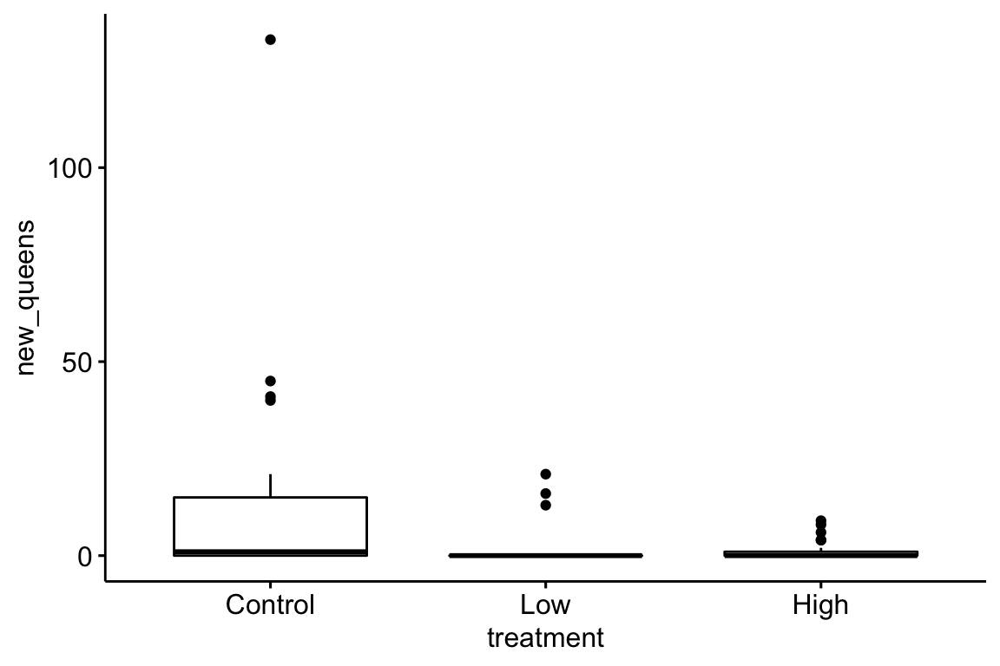
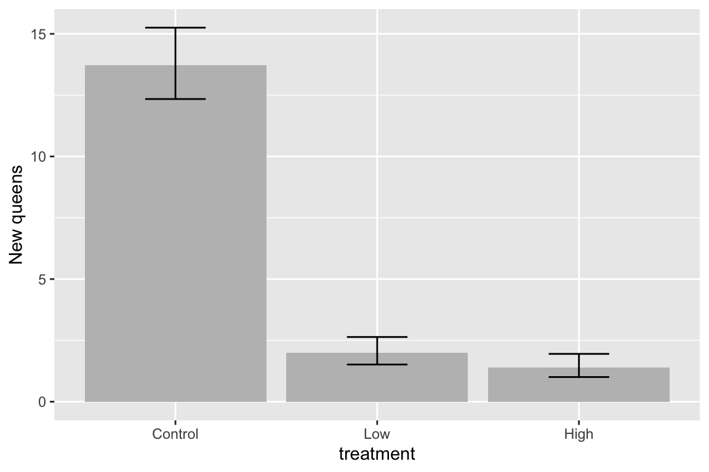
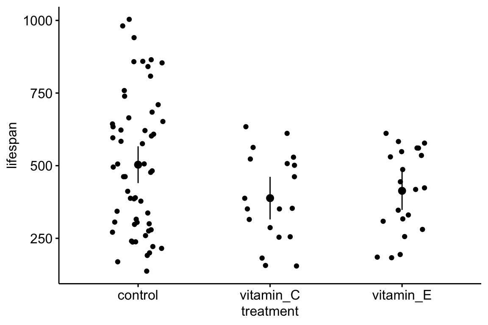

Chapter 2 Data – Reading, Wrangling, and Writing
Importing data into R can be a struggle for new R users and, unfortunately, most online sources give easy but superficial methods that don’t follow best practices for increasing reproducibility or do not allow flexible organization of files within a project. Some examples:
(tl;dr – go to next section if you just want to import a file and don’t want to understand this important background information!)
df <- read.table(file="clipboard")imports data copied to the clipboard, from an Excel/Sheets file or from an open text file. For this to be semi-reproducible, a comment specifying the filename, worksheet and range that was copied is necessary. More problematic (catastrophically so for reproducibility), is, how does a researcher know that they highlighted and copied the correct range in the Excel sheet?df <- read.csv(file.choose())opens the familiar “open file” dialog box, which lets the user navigate to the file of choice. For this to be semi-reproducible, a comment specifying the filename to import is necessary. The catastrophic problem (for reproducibility) is, how does a researcher know which file was actually opened during an R session? The researcher might think they opened “walker_maine_bee_data_clean_androscoggin.csv” but mistakenly opened “walker_maine_bee_data_clean_aroostook.csv”.df <- read.table(file="my_data.txt")anddf <- read_excel(file="my_data.xlsx")are reproducible because the filename is explicitly specified. But, this method requires that “my_data” is physically located in the same folder as the file containing the R script (the notebook .Rmd file in our case) and this violates the best practice of clean project organization with different folders for the different kinds of files (data, R scripts, images, manuscript text, etc.).- R Studio has an elegant import tool in the environment pane that opens a custom dialog box that allows the researcher to navigate to the file, and to specify what part of the file to import, such as the specific sheet and range for an Excel file. This has the same reproducibility issues as #1 and #2 but R Studio includes the equivalent script, which adds all relevant information for reproducility. One then simply copies and pastes this script into a code chunk and voila! The next time the script is run, the data can be imported from the script without using menus and dialog boxes. Except that..the script does not seem to take into account that the working directory of an R Markdown file is not the project folder but the folder containing the R Markdown file and so this two-step method fails. More personally, I’d prefer to run a chunk that quickly opens the data file instead of re-navigating through my file system and re-specifying the sheet and range every time I re-start the project in a new R session.
There are at least three solutions to the issues raised above, all requiring some understanding of file paths and directory structure in an operating system. A file such as “my_data.xlsx” has an absolute file path, which is the full address of the file (the filename is something like your house street number). The absolute file path of “my_data.xlsx” might be “/Users/jwalker/Documents/applied-biostatistics/data/my_data.xlsx”. A relative file path is the file path from the working directory. In an R Studio project, the working directory is the project directory, which is the directory containing the .Rproj file. This will be the working directory of the console. Importantly, the working directory of an R Markdown code chunk is the folder containing the saved R Markdown file. An R Studio Notebook is an R Markdown file so the working directory of a notebook code chunk is the folder containing the saved notebook file. If a notebook file is located within the notebooks folder, which is located within the project folder, then the relative file path to “my_file.xlsx” is “../data/my_file.xlsx”. The “..” tells the file OS to move “up” into the parent directory (which is the project folder) and the “data” tells the file OS to move “down” into the data folder. These are put together into a single address using “/”. The beauty of relative paths is that they remain the same – and so do not break one’s script – if the project folder, and all of its contents including the data folder and the notebooks folder, is moved to another location on the hard drive (say into a new “Research” folder). By contrast, the absolute file path changes, which breaks any old script.
The three solutions are
- Create a relative path to the file using something like
file_path <- "../data/my_data.xlsx". This should always work but it fails on some computers. For example, if the project folder is on a Windows OS (but not Mac OS) desktop, the assigned relative address doesn’t seem to look in the folder containing the file. - Create a setup chunk that reroutes the working directory to the project folder using the script
# use this in a chuck called "setup" to force the working directory to be
# at the level of the project file.
knitr::opts_knit$set(root.dir = rprojroot::find_rstudio_root_file())For this to work, the chunk has to be named “setup”, that is, the text inside the curly brackets at the top of the chunk should be “r setup”. Then, with this chunk, the relative file path is file_path <- "../data/my_data.xlsx" if “my_data.xlsx” is immediately inside the data folder which is imediately inside the project folder. This should work on any machine, and should work even if a project folder is moved. However, it does not work when writing a book with Bookdown a Bookdown project has multiple .Rmd files and the chunk names cannot be repeated across files. There can only be one chunk called “setup”.
- Use the function here(). The most robust solution seems to be using the function here() from the here package. The function works something like this
data_path <- "data" # path to data that are imported
file_name <- "my_data.xlsx"
file_path <- here(data_path, file_name) # paste together parts of the address
read_excel(file=file_path)here() creates an absolute path, but one that is created on the fly, and will change (or should change) correctly if the project folder is moved on the same machine or to another machine. And no chunk named setup is required so this also works in every R markdown file when using Bookdown.
2.1 Create new notebook for this chapter
Create a new notebook and save it to the “notebooks” folder of your BIO_413 project. Important: In an R Studio project, the working directory is the project directory (the location of the .Rproj file) – this will be the working directory of the console. The working directory of an R Markdown code chunk is the folder containing the saved R Markdown file. An R Studio Notebook is an R Markdown file so the working directory of an notebook code chunk is the folder containing the saved notebook file. Importantly, the working directory of the code chunk isn’t “moved” to the folder containing the saved file until the file is saved so import/export scripts will no work properly until the file is saved!
Annotate your notebook with notes! Update it as you learn more! We will use data.table for importing text files in tab-delimited or comma-separated formats and the readxl package for importing excel files.
Start each notebook with a chunk named “setup” that loads packages and sets the address for reading and writing files (note that since this book is advocating the use of here() to set the file path, naming the setup chunk “setup” is not imperative).
library(here) # here() creates the absolute path to the file
library(janitor) # clean_names to clean col labels of imported data
library(readxl) # import excel
library(data.table) # make data.frames data.tables
library(ggplot2) # ggplot environment
library(ggpubr) # publication ready plots
library(emmeans) # get estimated marginal means and CIs, used for plot
here <- here::here # plyr also defines a here function
# relative paths to project folders
data_path <- "data" # path to data that are imported
output_path <- "output" # path to data that are saved
image_path <- "images" # path to image folderNote on the script above 1. Be kind to the future you by loading only the packages necessary for the code in the R Markdown file that you are working on. If your default is to load everything, the future you will be confused why something was installed. 2. Be kind to the future you by commenting on why a package is loaded; usually this is a specific function from the package 3. here <- here::here is my favorite script ever. What is it doing? One can read this as “assign the function here from the here package to the object here” (this is reading the script right to left). Why do this? It turns out the multiple packages define a function called “here”. If any of these packages are loaded after the here package, then here from here won’t work – it will be replaced by here from the more recently loaded package. To make sure that here uses the function from the here package, I simply reassign here from the here package to the objeect “here” after loading in all packages.
2.2 Importing data
Throughout this book, we will download data from the Dryad Digital Repository, which is a major resource for increasing reproducibility in science. My own view is that all data should be archived on some public server (exceptions include data that are proprietary or contain sensitive information – such as human health measures).
2.2.1 Excel file
The Excel dataset is from an experiment on the growth response of zebra finch chicks to an incubation call that presumably signals “hot environment” to the embryos (Mariette, M.M. and Buchanan, K.L., 2016. Prenatal acoustic communication programs offspring for high posthatching temperatures in a songbird. Science, 353(6301), pp.812-814). The source file is from the Dryad Repository here:
file name: “allDatasetsMarietteBuchanan2016.xls”
source: https://datadryad.org//handle/10255/dryad.122315
Steps
- Copy the title of the Dryad page, which is “Data from: Prenatal acoustic communication programs offspring for high post-hatching temperatures in a songbird”
- Create a new folder within “data” and paste in the copied title as the folder name
- Remove the colon from the name, so the folder name is “Data from Prenatal acoustic communication programs offspring for high post-hatching temperatures in a songbird”
- Download the .xls file into this folder
A .xls file is an old (pre 2007) Microsoft Excel file type. It is a binary file and can only be opened into a readable format with specialized software. The more modern Excel file type is .xlsx, which contains within it multiple xml components. An xml file is a text file, and so contains readable content, but the content is xml code to display something. In general, I am a big advocate of archiving stuff as text files (manuscripts, data, scripts, blog posts) because these will always be readable by future software. Microsoft Excel is not likely to die anytime soon and software that can read .xls and especially .xlsx files (again, .xlsx files are text files) is even less likely to disappear but we can feel even more confident if data are archived as text files. That said, a single microsoft excel file with multiple sheets is an efficient method for distributing data and the readxl package provides excellent tools for reading different sheets of a single .xls or .xlsx file.
The code below uses the function read_excel() from the package readxl. More about the amazing power of this package is the tidyverse page and chapter 11 in the R for Data Science book.
folder <- "Data from Prenatal acoustic communication programs offspring for high post-hatching temperatures in a songbird"
fn <- "allDatasetsMarietteBuchanan2016.xls"
file_path <- here(data_path, folder, fn)
#file_path <- paste(data_path, folder, fn, sep="/")
chick <- read_excel(file_path, sheet="nestlingMass") # read the excel file
chick <- data.table(chick) # convert to data.tableIn this book, we will consistently uses this protocol for storing and retrieving downloaded files. The first three lines in the script above creates the directory path to the file. This path includes
- data_path – the relative path into the folder “data” (relative to the location of the project file)
- folder – the name of the folder within “data” containing the file
- filename – the name of the file to read
These are all put together into the absolute path using the function here() from the here package. Take a look at the value of file_path to confirm. The read_excel(file_path, sheet="nestlingMass") reads the nestlingMass sheet only. The next line:chick <- data.table(chick) converts the data.frame into a data.table.
2.2.1.1 Peak at the imported data.table to check that the file was imported correctly and to learn about the contents.
Insert the following after your import script and run:
View(chick) # check -- are there headers? are there the correct number of columns?The line View(chick) script opens a new tab containing a spreadsheet-like display of the data frame chick. This is one way to check that the data were imported correctly, to examine the column labels to ensure they conform to best practices, and to simply get to know the contents of the imported file. From the view of chick, it may not be immediately apparent that the column names contain spaces. This can be seen more easily using
colnames(chick)## [1] "chick ID" "brood ID"
## [3] "brood composition" "sex"
## [5] "rank in nest" "playback treatment"
## [7] "nest temperature above ambient" "max daily temp hatch day"
## [9] "mean max temp hatch to day2" "mean max temp hatch to day10"
## [11] "mean max temp hatch to day13" "hatching mass"
## [13] "day1 mass" "day2 mass"
## [15] "day10 mass" "day13 mass"
## [17] "day13 tarsus"In general, it is bad practice to include spaces, parentheses, and special characters such as $ or ^, in the column names of a data frame because these increase handling costs later on. The best practice is to replace a blank with an underscore, for example brood_id. Some coders separate words with a period (brood.id). Others mash words together into a single word like this broodid but this should generally be avoided because the result can be hard to read. Finally, some coders use Caps to designate new words like this BroodId. This is easier to read than simple concatenation but the underscore is the easiest to read.
The janitor package has a nice function to clean the column names of a data frame including replacing spaces with an underscore and stripping parentheses. The default clean includes changing any uppercase letter to lower case. Many coders like to work with all lowercase variable names to avoid having to hit the shift key.
chick <- clean_names(chick)Importantly, resist the temptation to change the column names in the data file, which reduces reproducibility. Leave original data files original. Always increase reproducibility!
2.2.1.2 Best practices for creating data files
https://www.youtube.com/watch?time_continue=309&v=Ry2xjTBtNFE – An excellent video introduction to best practices for organizing data in a spreadsheet that will subsequently be analyzed by statistics software.
Broman, K. W., & Woo, K. H. (2017). Data organization in spreadsheets (No. e3183v1). https://doi.org/10.7287/peerj.preprints.3183v1 – An excelllent review of best practices for organizing data in a spreadsheet.
2.2.1.3 Explore with plots
Just for fun, let’s plot the data and reproduce Fig. 2A and B. We are using the qplot function, which is from the ggplot2 package. Two plots are made and only a subset of the rows are plotted in each (in A, the subset in which playback_treatment==“treat” and, in B, the subset in which playback_treatment==“cont”). This book uses the ggplot2 package extensively.
qplot(x=nest_temperature_above_ambient, y=day13_mass, data=chick[playback_treatment=="treat"]) +
geom_smooth(method="lm")
qplot(x=nest_temperature_above_ambient, y=day13_mass, data=chick[playback_treatment=="cont"]) +
geom_smooth(method="lm")
2.2.2 Text file
The example dataset comes from an experiment on the effect of neonicotinoid pesticides on bumble bee colony growth.
file name: “Whitehorn, O’Connor, Wackers, Goulson (2012) Data from ‘Neonicotinoid pesticide reduces bumblebee colony growth and queen production’.csv.csv”
source: https://datadryad.org//resource/doi:10.5061/dryad.1805c973
Steps
- Copy the title of the Dryad page, which is “Data from: Neonicotinoid pesticide reduces bumblebee colony growth and queen production”
- Create a new folder within “data” and paste in the copied title as the folder name
- Remove the colon from the name, so the folder name is “Data from Neonicotinoid pesticide reduces bumblebee colony growth and queen production”
- Download the .csv file into this folder
A .csv file is a text file that is comma-delimted, which means that the entries of a row are separated by commas. A text file is readable by any text editor software and most other kinds of software. Datasets that are stored as text files are typically saved as either .csv (where the entries of a row are separated by commas) or .txt (where the entries are separated by tabs). The base R way to read a .csv file is using read.csv. The read.table function is more versatile, as the delimiter can be specified. The function fread() from the data.table package is fast, smart, and flexible. It is smart in the sense that it guesses what the delimter is. Unfortunately, because of spaces in the column labels for this file, fread guesses incorrectly (another reason why spaces in column labels should be avoided). To overcome this, the statement below specifies that the file contains a “header” (a line containing column labels)
folder <- "Data from Neonicotinoid pesticide reduces bumblebee colony growth and queen production"
filename <- "Whitehorn, O'Connor, Wackers, Goulson (2012) Data from 'Neonicotinoid pesticide reduces bumblebee colony growth and queen production'.csv.csv"
file_path <- here(data_path, folder, filename)
bee <- fread(file_path, header=TRUE)Here, as with the import of the Excel file, the first three lines create the directory path to the file. Peek at the file in the console. Again, there are spaces in the column names. Here I’ll leave it to you to change this
Here is a reproduction of Fig 2 from the journal article.
bee[, treatment:=factor(treatment, c("Control", "Low", "High"))] # reorder factor levels
ggbarplot(data=bee, x="treatment", y="new_queens", add = "mean_se")
The plot suggests immediately some problems with the plot itself and the associated analysis. First, the y-axis is counts, which means that negative values are impossible. But the standard error bars look like they use standard errors computed from a model that allows infinetly large negative values, and the illustrated standard error bars imply that negative values exist. So these error bars are misleading. Second, it is good practice, especially if sample sizes are modest or small, to “show the data”, which means, show the individual data points and not just a summary of the distribution.
Here are three alternative plots for exploratory purposes. The first simply “shows the data” but still uses the misleading standard error bars. The second uses a box plot. The last plots the means and 95% confidence intervals modeled with a GLM (generalized linear model) to account for the count data (the model used could be improved). Notice that the bar length above the mean is longer than the bar length below the mean (that is the interval is asymmetric about the mean). In order to stay focussed on importing data, I leave explanation of these plots and analysis to later chapters.
ggbarplot(data=bee, x="treatment", y="new_queens", add = c("mean_se", "point"))
ggboxplot(data=bee, x="treatment", y="new_queens")
fit.glm <- glm(new_queens ~ treatment, data=bee, family=poisson())
means.glm <- emmeans(fit.glm, specs="treatment", type = "response")
gg <- ggplot(data=data.frame(means.glm), aes(x=treatment, y=rate)) +
geom_col(fill="gray") +
geom_errorbar(aes(x=treatment, ymin=asymp.LCL, ymax=asymp.UCL), width=0.3) +
ylab("New queens") +
NULL
gg
2.3 Troubleshooting file import
If you get an error that starts with “Error: path does not exist:” then R is not “seeing” your specified file given the path you’ve given it.
- Make sure you loaded the package
herein a “load-libraries” chunk and that you have run the chunk - Make sure you have assigned
data_path <- "data"in the setup chunk and have run the chunk. - Make sure your “data” folder is one level inside your project folder. “one level” means it is not buried deeper inside other folders within the project folder.
- Make sure your “Data from …” folder is one level inside your “data” folder
- Make sure your data file is one level inside the correct “Data from” folder.
- Bug alert Make sure you have the name of the “Data from …” folder correct in your script. Do not type the name of the folder. Instead, go to the finder and highlight the folder containing the data file, copy the name, return to the R markdown script, type
folder <- ""and then paste the clipboard (the name of the folder) in between the quote marks. - Bug alert Make sure the file name is correct in the script. As with the folder name, I go to the finder and copy the file name and paste it in place. In Windows use ctrl-a instead of ctrl-c to copy the full filename including the extension.
More generally, Humans are very good at understanding misspelled and OdDLy capitalized words but the R language (or any computer language) is very literal. R is case sensitive (some programming languages are not). “Prenatal acoustic communication”, “Prenatal Acoustic Communication”, and “prenatal acoustic communication” are all different values. Spelling AND capitalization have to be perfect, not simply close. Spelling includes spaces. A frequent bug is a file name typed as “Prenatal acoustic communication” when the actual name is “Prenatal acoustic communication”. Can you spot the bug? The original (what we need to copy) has two spaces between “acoustic” and “communication” while the incorrect copy has only one.
Spelling bugs are avoided by simply copy and pasting names of folders, names of files, column names of data frames, and level names of factors, which leads to a general rule of R scripting…
2.3.1 Rule number one in R scripting {# rule1}
Always copy and paste any text that will be inserted into quotes
Do not try to type it out. You have been warned.
2.4 Data wrangling
2.4.1 Converting a single column with all combinations of a 2 x 2 factorial experiment into two columns, each containing the two levels of a factor
Article source: Tauriello, D., Palomo-Ponce, S., Stork, D. et al. TGFβ drives immune evasion in genetically reconstituted colon cancer metastasis. Nature 554, 538–543 (2018) doi:10.1038/nature25492
Data source: https://www.nature.com/articles/nature25492#Sec23
filename: “41586_2018_BFnature25492_MOESM10_ESM.xlsx”
sheet: “Fig. 4h-tumours”
The analysis of the data in Fig. 4h specifies a single \(X\) variable “Treatment” with four levels (or groups): “Con”, “Gal”, “aPD-L1”, and “Gal+aPD-L1”. These levels indicate that the design is actually factorial with two factors, each with two levels. The first factor has levels “no Gal” and “Gal”. The second factor has levels “no aPD-L1”, “aPD-L1”. The single column Treatment “flattens” the 2 X 2 factorial design to a 4 x 1 design. In general, we would want to analyze an experiment like this as factorial model, because this allows us to make inferences about the interaction effect between the two factors. For these inferences, we need a standard error, or a confidence interval, or a p-value of the estimate, which we can easily get from the factorial model. In order to analyze the data with a factorial model, we need to create two new columns – one column is the factor variable containing the two levels of Gal and one column is the factor variable containing the two levels of aPD-L1.
gal_levels <- c("no Gal", "Gal")
tumor[, gal := ifelse(treatment == "Gal" | treatment == "Gal+aPD-L1",
gal_levels[2],
gal_levels[1])]
apd_levels <- c("no aPD-L1", "aPD-L1")
tumor[, apdl1 := ifelse(treatment == "aPD-L1" | treatment == "Gal+aPD-L1",
apd_levels[2],
apd_levels[1])]
# re-order factor levels
tumor[, gal:=factor(gal, gal_levels)]
tumor[, apdl1:=factor(apdl1, apd_levels)]A way to check the results to make sure that our conversion is correct is to compute the sampel size for the 2 x 2 combinations, but include the original treatment column in the by list.
tumor[!is.na(num_positive_per_mm), .(N=.N), by=.(treatment, gal, apdl1)]## treatment gal apdl1 N
## 1: Con no Gal no aPD-L1 124
## 2: Gal Gal no aPD-L1 89
## 3: aPD-L1 no Gal aPD-L1 101
## 4: Gal+aPD-L1 Gal aPD-L1 58That looks good.
Bug alert If you break Rule #1, and type in the treatment level “Gal+aPD-L1” as “Gal + aPD-L1”, then you will get new columns containing junk.
## treatment gal apdl1 N
## 1: Con no Gal no aPD-L1 124
## 2: Gal Gal no aPD-L1 89
## 3: aPD-L1 no Gal aPD-L1 101
## 4: Gal+aPD-L1 no Gal no aPD-L1 58Remember Rule #1. Always copy and paste any text that will be inserted into quotes. This is easily done here by typing unique(tumor$treatment) into the console. This function returns the unique values of the column “treatment” of the data.table “tumor”.
unique(tumor$treatment) [1] “Con” “Gal” “aPD-L1” “Gal+aPD-L1”
Now, copy the name of a level and paste into your code. Repeat until done.
2.4.2 Combining data
Source article Bak, A.M., Vendelbo, M.H., Christensen, B., Viggers, R., Bibby, B.M., Rungby, J., Jørgensen, J.O.L., Møller, N. and Jessen, N., 2018. Prolonged fasting-induced metabolic signatures in human skeletal muscle of lean and obese men. PloS one, 13(9), p.e0200817.
Data source https://datadryad.org/stash/dataset/doi:10.5061/dryad.6121hj7
file name: datafiles.xlsx
The data are from a randomized crossover design where 18 men (9 lean and 9 obese) were measured for multiple metabolic markers at two times: 1) in a post-absorptive state after 12 hours overnight fast, and 2) in a prolonged fasting state after 72 hours of fasting. In addition, at each time point, metabolic markers were measured prior to and after an insulin infusion. Here, we want to reproduce values in Table 2, which are measures of mean blood insulin and metabolite levels after 12 hours and 72 hours fasting in both the lean and obese groups.
A difficulty for the analyst is that the response data are in the “Table 2” sheet but the variable containing the assignment to “lean” or “obese” group is in the “Table 1” sheet. To analyze these response, the two datasets need to be combined into a single data frame. The important consideration when combining data is that like is matched with like. For the fasting dataset, “like” is the subject id, and we have some data for each subject id in Table 1 and other data for the same subject ids in Table 2. This means that we essentially want to glue the columns of table 2 to the columns of table 1 in a way that insures that the correct data for each subject id is on the same row. This is a bit more complicated for these data because Table 1 contains 18 data rows, one for each subject id and Table 2 contains 36 data rows, 2 for each subject id, because each subject has data measured at 12 hours and at 72 hours.
2.4.3 Subsetting data
It is common to see researchers create multiple subsets of data for further processing. This practice should be be discouraged because the same variables will be in multiple data frames and it can be hard to keep track of any processing of variables in the different datasets. Instead, subset the data at the level of analysis.
There are many ways to subset data in R. Experienced users tend to divide up into those using base R, those using the tidyverse packages, or those using data.table. Learn one well. This book uses data.table.
In these examples, dt is the name of a data table (a data frame that has been converted to a data table), not a function. Remember that all functions are followed by parentheses.
dt[sex=="female",]includes all rows in which the column sex contains the value “female”dt[sex=="female" & age > 18, ]includes all rows in which the columnsexcontains the value “female” AND the column age contains values greater than 18dt[site=="wells marsh" | site=="scarborough marsh", ]contains the rows in which the column “site” contains either the value “wells marsh” OR “scarborough marsh”dt[(site=="wells marsh" | site=="scarborough marsh") & sex == "female", ]contains the rows in which the column “site” contains either the value “wells marsh” OR “scarborough marsh” AND the column sex contains the value “female”.
Here I fit a linear model of glucose ~ group to the “12 hour fast” subset of the fasting data that was just imported (group is the column containing either “lean” or “obese”).
m1 <- lm(glucose_t_240_min_m_m ~ group, data=fasting[intervention=="12 h fast", ])
coef(summary(m1))## Estimate Std. Error t value Pr(>|t|)
## (Intercept) 4.8375 0.1201747 40.2538890 7.115319e-16
## groupobese 0.0250 0.1699527 0.1470997 8.851507e-012.4.4 missing data
The function na.omit omits all rows with at least one missing value. In general, be vary careful if using na.omit because you may delete values that you should be analyzing. For example, here is a fake data set, call it “plant”, with two response variables, one of which has a missing value.
| treatment | root_mass | shoot_mass |
|---|---|---|
| cn | 100.2 | 239.9 |
| cn | NA | 205.4 |
| cn | 95.6 | 244.6 |
| cn | 149.1 | 252.1 |
| tr | 100.2 | 239.9 |
| tr | 118.0 | 205.4 |
| tr | 95.6 | 244.6 |
| tr | 149.1 | 252.1 |
This code “cleans” the data.table plant by omitting rows with any missing value
plant <- na.omit(plant)The problem is, any analysis of \(shoot\_mass\) will not contain the value 244.6 because it was deleted from the data frame along with the rest of the row containing the missing value.
Instead of deleting the entire row, retain all data but handle missing values at the level of the analysis. This can be done using the subset mechanism. The function is.na returns a boolean (a variable with values TRUE or FALSE) for each element in a list. Consequently, the function !is.na can be used to obtain the rows in which the value of \(root_mass\) is “not na”.
summary_table <- plant[!is.na(root_mass),
.(mean=mean(root_mass),
sd=sd(root_mass),
se=sd(root_mass)/sqrt(.N),
N=.N),
by=.(treatment)]
knitr::kable(summary_table, digits=1)| treatment | mean | sd | se | N |
|---|---|---|---|---|
| cn | 115.0 | 29.6 | 17.1 | 3 |
| tr | 115.7 | 24.2 | 12.1 | 4 |
Many R functions automatically handle missing values. For example, the mean and sd functions have NA handling methods. These are used in the script below and generate the correct mean and sd. But the computation of the standard error fails to compute the correct answer because it uses the wrong N. Compare the results to the script using !is.na. Without using !is.na, the sample size for the control, for the variable root_mass, is incorrect–it is simply the number of rows where \(Treatment\) is “cn”.
summary_table <- plant[,
.(mean=mean(root_mass, na.rm=TRUE),
sd=sd(root_mass, na.rm=TRUE),
se=sd(root_mass, na.rm=TRUE)/sqrt(.N),
N=.N),
by=.(treatment)]
knitr::kable(summary_table, digits=1)| treatment | mean | sd | se | N |
|---|---|---|---|---|
| cn | 115.0 | 29.6 | 17.1 | 3 |
| tr | 115.7 | 24.2 | 12.1 | 4 |
Familiarize yourself with these and with the NA handling methods of other functions, especially lm and predict.
2.4.5 Reshaping data
In general, your data should be in long format. What is long format? Consider data from a simple experiment with a response variable and a treatment variable with three levels. A common way to organize these data in Microsoft Excel is in wide format.
| control | extract | charcoal |
|---|---|---|
| 10.18 | 4.34 | 9.57 |
| 10.40 | 3.74 | 8.59 |
| 8.61 | 4.58 | 9.69 |
| 11.04 | 4.12 | 8.07 |
| 9.24 | 2.44 | 7.63 |
Wide format is efficient for computations in a spreadsheet, such as computing means and standard deviations of columns, and for plotting. For most statistical analyses in R (and most statistics software), all measures of a variable (such as root biomass in the example above) should be in a single column with a second column identifying the treatment level associated with each measure. This is called long format.
| treatment | root_mass |
|---|---|
| control | 10.18 |
| control | 10.40 |
| control | 8.61 |
| control | 11.04 |
| control | 9.24 |
| extract | 4.34 |
| extract | 3.74 |
| extract | 4.58 |
| extract | 4.12 |
| extract | 2.44 |
| charcoal | 9.57 |
| charcoal | 8.59 |
| charcoal | 9.69 |
| charcoal | 8.07 |
| charcoal | 7.63 |
2.4.5.1 Wide to long
There are many functions to tidy data from wide to long. melt() from the data.table package is especially useful. It is data.table’s version of melt from the reshape2 package.
The major arguments of data.table::melt are
melt(data, id.vars, measure.vars, variable.name, value.name)
melt takes the data in the columns listed in measure.vars and stacks these into a single column named value.name. The names of the columns in measure.vars are the values of the elements in a new column named variable.name. The elements of any column in id.vars are repeated p times, where p is the number of columns that were stacked.
Article: Rolig, A. S., Mittge, E. K., Ganz, J., Troll, J. V., Melancon, E., Wiles, T. J., … Guillemin, K. (2017). The enteric nervous system promotes intestinal health by constraining microbiota composition. PLOS Biology, 15(2), e2000689. https://doi.org/10.1371/journal.pbio.2000689
Data source https://doi.org/10.1371/journal.pbio.2000689.s008
file name: “journal.pbio.2000689.s008.xlsx”
Let’s import and tidy the data for figure 2d. Look at the excel file and the data in Fig. 2d. There is a single treament with four levels, but the authors have organized the data in each level in separate columns and used the column header as the level name.
folder <- "The enteric nervous system promotes intestinal health by constraining microbiota composition"
filename <- "journal.pbio.2000689.s008.xlsx"
# figure 2D data
sheet_i <- "Figure 2"
range_i <- "F2:I24"
file_path <- here(data_path, folder, filename)
#file_path <- paste(data_path, folder, fn, sep="/")
dt_wide <- data.table(read_excel(file_path, sheet=sheet_i, range=range_i))
# clean names
dt_wide <- clean_names(dt_wide)
# get rid of "_donor"
new_colnames <- c("gf", "wt", "sox10", "iap_mo")
setnames(dt_wide, old=colnames(dt_wide), new=new_colnames)
# wide to long
exp2d <- melt(dt_wide,
measure.vars=colnames(dt_wide),
variable.name="donor",
value.name="count")Look at the wide and long data frames using View. For these data, the number of measures within the different treatments differs, and as a consequence, there are multiple cells with NA which indicates a missing value. To delete the rows with the missing values, use
# delete rows with no data
exp2d <- na.omit(exp2d)For both analysis and plots, we want to compare values to the control level, which is named “wt” for the exp2d data. That is, we want “wt” to be the reference level. To achieve this, the levels of the factor donor need to be re-ordered.
exp2d[, donor:=factor(donor, c("wt", "gf", "sox10", "iap_mo"))]The example above is pretty easy, because the all columns in the original data frame are melted (stacked). Here is an example in which only a subset of columns are stacked. In addition, only a subset of the remaining columns are retained in the long format data frame. The data are from Panel A of supplement Fig. 8 (https://journals.plos.org/plosbiology/article/file?type=supplementary&id=info:doi/10.1371/journal.pbio.2003467.s019) from
Kešnerová, L., Mars, R.A., Ellegaard, K.M., Troilo, M., Sauer, U. and Engel, P., 2017. Disentangling metabolic functions of bacteria in the honey bee gut. PLoS biology, 15(12), p.e2003467.
**data source*:** https://doi.org/10.1371/journal.pbio.2003467.s001
folder <- "Data from Disentangling metabolic functions of bacteria in the honey bee gut"
filename <- "journal.pbio.2003467.s001.xlsx"
# figure 2D data
sheet_i <- "S8 Fig"
range_i <- "A2:H12"
file_path <- here(data_path, folder, filename)
#file_path <- paste(data_path, folder, fn, sep="/")
dt_wide <- data.table(read_excel(file_path, sheet=sheet_i, range=range_i))
# clean names
dt_wide <- clean_names(dt_wide)
# wide to long
stack_cols <- paste0("replicate", 1:5)
exp_s8a <- melt(dt_wide,
id.vars=c("media", "time_h"), # strain col not adding any information
measure.vars=stack_cols,
variable.name="Replicate",
value.name="OD600") # measure of absorbance at 600nm2.4.5.2 Stacking multiple sets of columns
This example comes from my lab, where a student measured sprint speed in each fish three times prior to treatment and three times following treatment. The wide format data looked something like this
set.seed(1)
fd_wide <- data.table(fish_ID=paste0("fish",1:4),
treatment=rep(c("cn", "tr"), each=2),
length=rnorm(4, 12, 2),
pre_1=rnorm(4, 50, 5),
pre_2=rnorm(4, 50, 5),
pre_3=rnorm(4, 50, 5),
post_1=rnorm(4, 50, 5),
post_2=rnorm(4, 50, 5),
post_3=rnorm(4, 50, 5)
)
knitr::kable(fd_wide, digits=1)| fish_ID | treatment | length | pre_1 | pre_2 | pre_3 | post_1 | post_2 | post_3 |
|---|---|---|---|---|---|---|---|---|
| fish1 | cn | 10.7 | 51.6 | 52.9 | 46.9 | 49.9 | 54.6 | 53.1 |
| fish2 | cn | 12.4 | 45.9 | 48.5 | 38.9 | 54.7 | 53.9 | 49.7 |
| fish3 | tr | 10.3 | 52.4 | 57.6 | 55.6 | 54.1 | 50.4 | 49.2 |
| fish4 | tr | 15.2 | 53.7 | 51.9 | 49.8 | 53.0 | 40.1 | 42.6 |
To analyze the response (post-treatment sprint) adjusted for pre-treatment sprint, the three pre-treatment sprint measures need to be stacked into a single column and the three post-treatment measures need to be stacked into a single column. This is easy using data.table::melt.
pre_cols <- paste("pre", 1:3, sep="_")
post_cols <- paste("post", 1:3, sep="_")
fd <- melt(fd_wide,
id.vars=c("fish_ID", "treatment", "length"),
measure.vars=list(pre_cols, post_cols),
variable.name="Order",
value.name=c("sprint_pre", "sprint_post"))
knitr::kable(fd, digits=1)| fish_ID | treatment | length | Order | sprint_pre | sprint_post |
|---|---|---|---|---|---|
| fish1 | cn | 10.7 | 1 | 51.6 | 49.9 |
| fish2 | cn | 12.4 | 1 | 45.9 | 54.7 |
| fish3 | tr | 10.3 | 1 | 52.4 | 54.1 |
| fish4 | tr | 15.2 | 1 | 53.7 | 53.0 |
| fish1 | cn | 10.7 | 2 | 52.9 | 54.6 |
| fish2 | cn | 12.4 | 2 | 48.5 | 53.9 |
| fish3 | tr | 10.3 | 2 | 57.6 | 50.4 |
| fish4 | tr | 15.2 | 2 | 51.9 | 40.1 |
| fish1 | cn | 10.7 | 3 | 46.9 | 53.1 |
| fish2 | cn | 12.4 | 3 | 38.9 | 49.7 |
| fish3 | tr | 10.3 | 3 | 55.6 | 49.2 |
| fish4 | tr | 15.2 | 3 | 49.8 | 42.6 |
2.4.6 Miscellaneous data wrangling
2.4.6.1 Vole data
A interesting data set to introduce a linear model for estimating treatment effects in an experiment are from
Selman, C., McLaren, J.S., Collins, A.R., Duthie, G.G. and Speakman, J.R., 2013. Deleterious consequences of antioxidant supplementation on lifespan in a wild-derived mammal. Biology letters, 9(4), p.20130432.
- Source: Dryad Digital Repository. https://doi.org/10.5061/dryad.31cc4/1
- File: “RSBL-2013-0432 vole data.xlsx”
- Sheet: “COLD VOLES LIFESPAN”
The vole data were archived in a format that requires some wrangling before it can be analyzed. The “lifespan (days)” column contains the lifespan for all three treatment levels, that is, the lifespan values are “stacked” or in “long” format. What is unusual is that there is no “treatment” column specifying the three treatment levels (control, vitamin E, vitamin C). Instead there are control, vitamin E, and vitamin C columns that contain a 1, if the lifespan value belongs to that treatment, and a NULL value if not. On import, the NULL value is replaced with NA, to indicate “missing”. In order to analyze the data, the three treatment assignment columns need to be combined into a single “treatment” column.
folder <- "Deleterious consequences of antioxidant supplementation on lifespan in a wild-derived mammal"
filename <- "RSBL-2013-0432 vole data.xlsx"
file_path <- here(data_path, folder, filename)
vole <- read_excel(file_path, sheet="COLD VOLES LIFESPAN", range="a2:d98") %>%
clean_names() %>%
data.table()
# create treatment column
# in rows where control=1, set treatment value to "control"
vole[control==1, treatment:="control"]
# in rows where vitamin_e=1, set treatment value to "vitamin_e"
vole[vitamin_e==1, treatment:="vitamin_E"]
# in rows where vitamin_c=1, set treatment value to "vitamin_c"
vole[vitamin_c==1, treatment:="vitamin_C"]
# change column "lifespan_days" to "lifespan"
setnames(vole, old="lifespan_days", "lifespan")Plot the data with a stripchart (often called a dot plot) to view the lifespan as a function of treatment level
ggstripchart(x="treatment", y="lifespan", data=vole,
add = c("mean_ci"))
2.5 Saving data
For many projects, it is uncommon to save data. I might save simulated data if it takes a long time (tens of minutes to hours or even days) to generate these and I simply want to work with the simulated data in the future and not have to regenerate it. Or I might save processed data if it takes a long time import and process and I want to analyze the processed data in the future and not have to re-import and process it.
If the data will only be used in this or future R projects, the data can be saved as an R object using saveRDS()
save_file_path <- here(output_path, "vole.Rds")
saveRDS(object = vole, file = save_file_path)
# to read this use
vole <- readRDS(save_file_path)Reading a large .Rds file is very fast compared to reading the same data stored as a text file. However, if the data need to be imported into some other software, such as a spreadsheet, then save the data as a text file.
# save the data to output folder
# tab delimited
save_file_path <- here(output_path, "vole.txt")
write.table(vole, save_file_path, sep="\t", quote=FALSE)
# comma delimited
save_file_path <- here(output_path, "vole.csv")
write.table(vole, save_file_path, sep=",", quote=FALSE)Look at your project directory to make sure the file is where it should be! We used write.table() to create a tab-delimited text file using sep="\t" to specify tabs to separate the row elements. “” is the standard character string for a tab. Check in your output folder and open the file in a text editor.